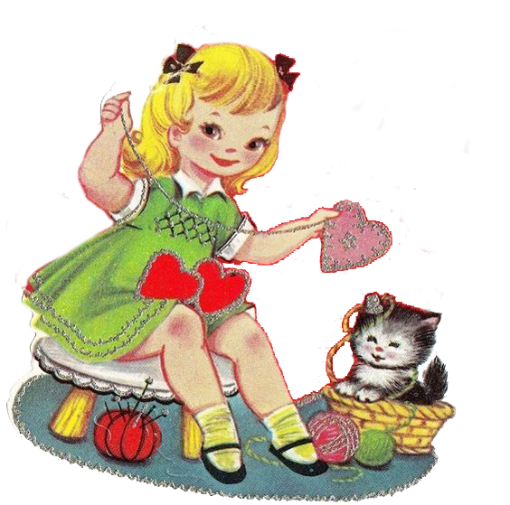

In 1797, a British publisher issued The Young Man's Valentine Writer, which contained scores of suggested sentimental verses for the young lover unable to compose his own. Printers had already begun producing a limited number of cards with verses and sketches, called "mechanical valentines." Paper Valentines became so popular in England in the early 19th century that they were assembled in factories. Fancy Valentines were made with real lace and ribbons, with paper lace introduced in the mid-19th century. In 1835, 60,000 Valentine cards were sent by post in the United Kingdom! In 1840 the invention of the postage stamp, which caused a decrease in postals rates, caused the number of Valentines posted to increase to 400,000 sent just one year after its invention, and ushered in the less personal but easier practice of mailing Valentines. This made it possible for the first time to exchange cards anonymously, which is taken as the reason for the sudden appearance of racy verse in an era otherwise prudishly Victorian. Production increased, "Cupid's Manufactory" as Charles Dickens termed it, with over 3,000 women employed in manufacturing. The Laura Seddon Greeting Card Collection at Manchester Metropolitan University gathers 450 Valentine's Day cards dating from early nineteenth century Britain, printed by the major publishers of the day.
In the United States, the first mass-produced Valentines of embossed paper lace were produced and sold shortly after 1847 by Esther Howland of Worcester, Massachusetts. Her father operated a large book and stationery store, but Howland took her inspiration from an English Valentine she had received from a business associate of her father. Intrigued with the idea of making similar Valentines, Howland began her business by importing paper lace and floral decorations from England. A writer in Graham's American Monthly observed in 1849, "Saint Valentine's Day ... is becoming, nay it has become, a national holyday." The English practice of sending Valentine's cards was established enough to feature as a plot device in Elizabeth Gaskell's Mr. Harrison's Confessions (1851): "I burst in with my explanations: 'The valentine I know nothing about.' 'It is in your handwriting', said he coldly.” Since 2001, the Greeting Card Association has been giving an annual "Esther Howland Award for a Greeting Card Visionary.”
Since the 19th century, handwritten notes have given way to mass-produced greeting cards. In the UK, just under half of the population spend money on their Valentines, and around £1.9 billion was spent in 2015 on cards, flowers, chocolates and other gifts. The mid-19th century Valentine's Day trade was a harbinger of further commercialized holidays in the U.S. to follow.
In 1868, the British chocolate company Cadbury created Fancy Boxes – a decorated box of chocolates – in the shape of a heart for Valentine's Day. Boxes of filled chocolates quickly became associated with the holiday. In the second half of the 20th century, the practice of exchanging cards was extended to all manner of gifts, such as giving jewelry.
The U.S. Greeting Card Association estimates that approximately 190 million valentines are sent each year in the US. Half of those valentines are given to family members other than husband or wife, usually to children. When the valentine-exchange cards made in school activities are included the figure goes up to 1 billion, and teachers become the people receiving the most valentines. The average valentine's spending has increased every year in the U.S, from $108 a person in 2010 to $131 in 2013. The rise of Internet popularity at the turn of the millennium is creating new traditions. Millions of people use, every year, digital means of creating and sending Valentine's Day greeting messages such as e-cards, love coupons or printable greeting cards. An estimated 15 million e-valentines were sent in 2010. Valentine's Day is considered by some to be a Hallmark holiday due to its commercialization.
